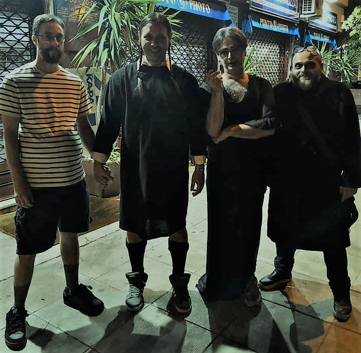

Dall'inaffidabilità di Freddy e dall'autismo di Mauro nasce l'idea, dallo spacciatore di birre indiano prendiamo il jolly Buscaglia, dopo vari casting sul divano arriva Livio e per ultimo (ma non ultimo) il salto di qualità del gruppo si fa con Campanaccio che arrangia e scrive i pezzi.
